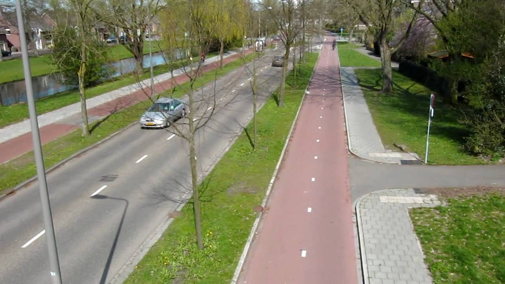

When most people in the United States thing of a cyclist they typically picture a young, to middle aged fit person in full cycling gear with an expensive bike that takes up too much space on the road. If you asked a dutch person to describe a cyclist, their response could range from a child on their way to school, an older person coming back from a trip to the grocery store, or just anyone making their regular commute. This difference in mentality comes from the way cycling is treated in these two places.
In the United states, most places do not have infrastructure built to encourage the use of bicycles. This means that cyclists are typically forced to either take up space on the road (which drivers absolutely hate) or if they're lucky, have to use what is typically called a "painted bicycle gutter". A painted bicycle gutter is the laziest way for a city to create bicycle infrastructure. It is basically just painting off a small portion.
When most people in the United States thing of a cyclist they typically picture a young, to middle aged fit person in full cycling gear with an expensive bike that takes up too much space on the road. If you asked a dutch person to describe a cyclist, their response could range from a child on their way to school, an older person coming back from a trip to the grocery store, or just anyone making their regular commute. This difference in mentality comes from the way cycling is treated in these two places.
In the United states, most places do not have infrastructure built to encourage the use of bicycles. This means that cyclists are typically forced to either take up space on the road (which drivers absolutely hate) or if they're lucky, have to use what is typically called a "painted bicycle gutter". A painted bicycle gutter is the laziest way for a city to create bicycle infrastructure. It is basically just painting off a small portion of a current road and "dedicating" it to bikes. These are obviously terrible because it allows cars to get very close to cyclists, which is extremely unsafe. On top of this, they are often blocked by parked vehicles and not maintained, which also makes them dangerous to the intended users.
On the other side of the coin, the Netherlands treats cycling as the primary mode of transportation for trips lasting around 5-15 minutes. This means that they have infrastructure in place that allows cyclists to safely and quickly reach their destinations, which leads to 36% of Dutch people listing bicycle as their most frequent mode of transportation on a typical day.
There are many different types of infrastructure that can make cycling preferable to driving, especially for short trips. For example, the employment of protected or separated bike lanes can make it much safer for cyclists to make trips alongside drivers, which is a win-win as more people cycling means less traffic.
